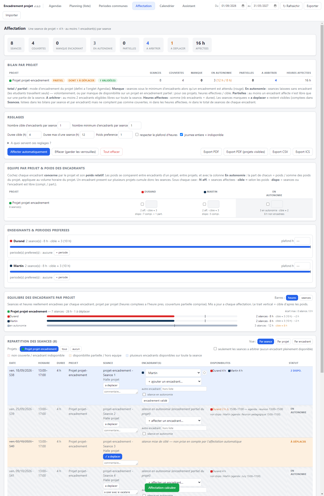

Application de bureau pour lire les agendas iCal des encadrants et des projets,
comparer les disponibilités, et répartir automatiquement les encadrants sur les séances de projet.
disponible · validé · couvert partiel · à arbitrer · à éviter manque · bloqué · indisponible élément cliquable de l'application
Sommaire
1 Présentation & démarrage
2 Onglet Agendas
3 Onglet Planning (liste)
4 Onglet Périodes communes
5 Onglet Affectation
6 Onglet Assistant
7 Réglages de l'affectation (référence)
8 Astuces & dépannage
Version 1.5.0 · IUT de Bordeaux · les libellés de cette notice reprennent exactement ceux de l'application.
1 Présentation & démarrage
L'application s'organise en cinq onglets, dans l'ordre où l'on s'en sert :
on renseigne les Agendas, on vérifie le Planning,
on repère les Périodes communes, on lance l'Affectation,
et on interroge l'Assistant.
Lancer l'application
Version installée — l'installeur Encadrement projet Setup 1.5.0.exe crée un
raccourci « Encadrement projet » (menu Démarrer et, au choix, bureau) : on lance l'application par ce
raccourci.
Version portable — double-cliquer sur Encadrement projet 1.5.0.exe : l'application
démarre directement, sans installation. Au premier lancement, Windows / SmartScreen peut afficher un
avertissement « éditeur inconnu » (application non signée) — cliquer Informations
complémentaires puis Exécuter quand même.
Depuis les sources — npm start dans le dossier du projet.
En haut de la fenêtre : la plage de dates analysée (« Du … au … »).
Elle borne les séances chargées et l'expansion des événements récurrents. Par défaut : mois courant → +9 mois.
Rafraîchir recharge tous les agendas ; Exporter /
Importer échangent un fichier .json autonome (sauvegarde, transfert à un collègue).
À noterTout reste sur le poste. Aucune donnée n'est envoyée à l'extérieur : agendas, réglages et
affectations sont enregistrés automatiquement dans %APPDATA%\Encadrement projet\project.json.
2 Onglet Agendas
Chaque encadrant et chaque projet possède son ou ses agendas iCal.
L'onglet Agendas : ajout d'un agenda, import Excel, listes Enseignants / Projets, et — sur une carte enseignant — le bloc « Indisponibilités récurrentes ».
Ajouter un agenda
Saisir un nom, choisir Enseignant ou Projet,
coller l'URL iCal (ou, à défaut, le contenu .ics dans le champ prévu), puis Ajouter.
Le téléchargement passe par l'application, pas par un navigateur : les flux d'emploi du temps
(Pronote, ADE…) qui bloquent l'accès direct fonctionnent normalement.
Plusieurs agendas pour un même encadrant (ou projet)
Un encadrant suit rarement un seul calendrier (agenda personnel + agenda d'établissement…).
Dans sa carte, + ajouter un agenda ajoute une URL (ou un contenu .ics) ;
retirer en supprime une dès qu'il y en a plus d'une. Tous les événements des
agendas d'une même carte sont fusionnés — le reste de l'application n'y voit que du feu.
Import en lot (Excel)
Télécharger le modèle Excel produit un fichier modele-agendas.xlsx
(+ une feuille Notice) avec les colonnes : Nom, Projet ou encadrant,
Encadrement (total / partiel), Heures totales, Heures encadrées,
% séances encadrées, Adresse iCal 1, Adresse iCal 2, Adresse iCal 3
(colonnes Adresse iCal 4… également reconnues).
Importer un tableau (.xlsx) crée les agendas. Une ligne dont le nom
correspond à un agenda existant le met à jour ; les adresses iCal qu'elle apporte et qui ne sont pas
déjà connues sont ajoutées (aucune n'est retirée par un import). En-têtes reconnus de façon
tolérante ; les lignes douteuses sont importées et listées en avertissement.
Les agendas importés restent entièrement modifiables dans l'onglet.
Ordre d'affichage & suppression en masse
Partout dans l'application, encadrants et projets sont affichés par ordre alphabétique
(accents et casse ignorés, tri naturel des nombres). L'ordre d'ajout n'a aucune incidence.
Supprimer tous les encadrants / Supprimer tous les projets
(au-dessus de chaque liste, avec confirmation) vident une catégorie entière. Le nettoyage retire aussi
les réglages qui pointaient vers les agendas supprimés (colonnes de la matrice équipe/poids, périodes
préférées, séances verrouillées).
Indisponibilités récurrentes en demi-journées (encadrants)
Sur chaque carte Enseignant, sans passer par l'Excel, on ajoute
une ligne par demi-journée indisponible — elles n'ont pas besoin d'être
contiguës (p. ex. lun. matin et mar. après-midi) — chacune avec son propre
degré. Les demi-journées vont de lun. matin à ven. après-midi
(coupure du midi à 12 h).
Degré
Effet sur l'affectation automatique
0
Disponible — aucune restriction (ne rien saisir).
1
À éviter : une séance n'y est placée qu'en dernier recours, lorsqu'aucun autre encadrant n'est possible.
2
Bloqué : aucune séance n'y est jamais placée automatiquement (comme une indisponibilité d'agenda). Un choix manuel reste possible mais est signalé « indispo (récurrent) ».
Mode d'encadrement d'un projet
total — chaque séance doit avoir un encadrant (défaut).
partiel — des séances peuvent rester sans encadrant. La cible d'heures
non encadrées s'exprime au choix (champ Répartition) :
en heures : Heures totales − Heures encadrées ;
en % de séances encadrées : X % ⇒ volume horaire × (1 − X/100).
L'affectation laisse alors volontairement ce volume d'heures sans encadrant, en commençant par les
séances les plus difficiles à pourvoir. Un poids dans la colonne Sans encadrant
de la matrice (onglet Affectation) l'emporte sur ce réglage.
3 Onglet Planning (liste)
Vue chronologique de tous les événements des agendas actifs, groupés par jour.
Filtres par type (encadrant / projet), par agenda
(cases à cocher) et recherche plein texte.
Chaque ligne : horaire, pastille de couleur de l'agenda, intitulé, lieu.
Exporter CSV pour retravailler la liste dans un tableur.
4 Onglet Périodes communes
Comparer plusieurs agendas pour trouver quand tout le monde est libre — ou au contraire tous occupés.
Cocher au moins deux agendas.
Choisir Créneaux libres communs ou Créneaux occupés communs.
Régler la fenêtre de travail (heures — 8 h–20 h par défaut ; jours — lun.–ven. par défaut),
puis Calculer.
Résultat groupé par jour, avec le total d'heures et un Exporter CSV.
5 Onglet Affectation
Répartir automatiquement les encadrants sur les séances de projet, en respectant
qui est libre, qui encadre quoi, et dans quelles proportions.
Séances
Ce sont tous les événements des agendas de type Projet, hors « journée entière »
et hors blocs plus longs que la Durée max d'une séance (12 h par défaut —
écarte les blocs « vacances » émis par certains flux). Le bandeau du haut résume : nombre de séances,
couvertes, manque encadrant, sans encadrant, partielles, à arbitrer, heures affectées.
Bilan par projet
Un tableau, une ligne par projet : Séances, Couvertes, Manque (sous le
minimum alors qu'un encadrement est attendu — rouge), Sans encadrant (pour un projet partiel :
heures effectives / cible), Partielles, À arbitrer (≥ 2 encadrants
éligibles libres sur toute la séance), Heures affectées.
Équipe par projet & poids des encadrants
Une matrice projets × enseignants, plus une colonne Sans encadrant. Chaque case
a une coche (« concerné par le projet ») et un poids relatif (1 par défaut). Aucune coche sur
un projet ⇒ tous les enseignants éligibles, poids 1.
Les poids définissent le nombre de séances : pour un projet, la part de chacun =
poids / somme des poids du projet (colonne Sans encadrant comprise), appliquée au
volume horaire. Un encadrant présent sur plusieurs projets cumule une cible de chacun. Le même
barème compare donc les encadrants entre eux, les projets entre eux, et « avec / sans encadrant ».
Sous chaque case : N aff. (séances affectées) · cible ≈ (d'après les
poids) · dispo : X compl. + Y part. (séances où l'encadrant est libre).
Enseignants & périodes préférées
Un plafond d'heures optionnel par encadrant.
Des périodes préférées : une ou plusieurs plages mois → mois.
Une séance dont le mois tombe dans une plage préférée pèse ≈ une séance de plus dans le choix.
Une barre de charge avec un repère de cible.
Équilibre des encadrants par projet
Un bloc de comparaison projet par projet, recalculé à chaque affectation : une ligne par
encadrant concerné avec N séances · X h — les heures sont celles réellement encadrées,
comptées à l'heure près (une couverture partielle compte pour sa durée réelle), une barre
proportionnelle (aux heures par défaut, bouton pour basculer en
séances), un trait vertical = cible d'après les poids, et l'écart
(+3 h, −1, équilibré). La ligne sans encadrant est incluse ;
l'en-tête de chaque projet indique le total et l'écart max entre encadrants. Sert à répartir les
séances de façon équilibrée en voyant l'effet de chaque choix tout de suite.
Lancer & ajuster
Vérifier les Réglages (voir §7), puis Affecter automatiquement.
Ajuster à la main : chaque encadrant proposé est un menu déroulant (échanger, ou
— retirer —) ; + ajouter un encadrant… en propose un second ;
une case séance sans encadrant par ligne. Les choix manuels sont verrouillés
et ne bougent plus au prochain calcul.
Un encadrant marqué 2 (indispo récurrente) apparaît « indispo (récurrent) »
dans les menus ; un 1 apparaît « à éviter » et « (à éviter) » dans la
colonne Disponibilités.
Trois façons de lire le résultat
En haut du tableau des séances, Vue : bascule entre
Par séance (liste chronologique, modifiable),
Par projet (groupé, modifiable) et
Par encadrant (synthèse en lecture seule : séances et heures par projet, cible).
Chaque date est précédée du nom du jour et suivie du numéro de semaine ISO
(ven. 18/09/2026 · S38) — même format dans le rapport PDF et les exports. Les boutons
Projets : limitent l'affichage à certains projets (et pilotent l'export PDF
correspondant) ; la case seulement les séances sans encadrant pleinement disponible
ne garde que les séances à arbitrer en priorité.

La Répartition des séances : nom du jour devant la date, sélecteur de projets, une séance marquée « à déplacer », et les motifs d'indisponibilité dans la colonne Disponibilités (« non dispo : Martin (agenda : …) »).
Séance à déplacer
Le bouton à déplacer (colonne Séance) met une séance de côté :
l'affectation automatique l'ignore (aucun encadrant placé, pas comptée comme un manque). Elle
reste visible dans tous les bilans — bilan par projet, bilan par séance, répartition par
encadrant, séances par projet, à l'écran comme dans le rapport PDF — marquée « à déplacer »,
mais ne compte pas : ni comme séance couverte, ni dans les Heures affectées, ni dans
le total de séances / d'heures de chaque encadrant. Elle figure dans le décompte Séances du
projet, avec un rappel « dont N à déplacer ». Recliquer la réintègre.
Commentaire, autre encadrant, encadrement validé
Commentaire — sous le nom de la séance, une zone de texte libre
(auto-enregistrée) : la note est reprise dans le rapport PDF (précédée d'une icône « commentaire »)
et les exports CSV / ICS.
autre encadrant — un champ pour noter quelqu'un qui n'a pas d'agenda
dans l'application (vacataire, intervenant extérieur…). Il compte pour un encadrant : la séance
n'est plus « manque » et l'affectation automatique n'y place personne d'office. Il apparaît en gris
« (hors liste) » dans la Répartition, le rapport et les exports.
encadrement validé — fige la séance sur ses encadrants du moment.
Une séance validée garde exactement ses encadrants au prochain Affecter
automatiquementet après une mise à jour des agendas, n'est jamais comptée « manque »
(même sous le minimum), et s'affiche sur fond vert (statut « validé »). Recliquer lève le blocage.
Le bouton ○ / ✓ à côté de chaque encadrant verrouille
ce seul encadrant sans figer toute la séance.
Séance déjà dans l'agenda de l'encadrant
Si un encadrant affecté a, dans son propre agenda, un événement qui coïncide avec la séance
(mêmes bornes à ~20 min près — typiquement le même événement publié sur le calendrier du projet
et sur celui de l'enseignant), son nom est surligné en vert foncé
(✓ dans son agenda) et un badge agenda ✓ s'ajoute dans Statut. Cet
événement n'est alors pas compté comme un conflit : la ligne ne passe pas en rouge et le statut
n'indique pas « indispo » pour ce seul motif.
Pourquoi un encadrant est indisponible
Dans la colonne Disponibilités, un encadrant partiellement disponible ou écarté porte son
motif : occupé : <autre projet> — <séance> HH:MM–HH:MM (deux projets ont une
séance simultanée et l'encadrant est déjà pris ailleurs), agenda : <intitulé>, ou
indisponible récurrent (demi-journée). En cas de séances simultanées sur deux projets,
l'encadrant est placé sur celle traitée en premier (ordre chronologique, puis alphabétique du projet) —
ce n'est pas un arbitrage entre les deux projets.
Exports
Extrait du rapport PDF : daté et horodaté, statuts en couleur, une section « Bilan par séance » et une page par encadrant / par projet.
Export PDF — rapport daté et horodaté, en couleurs : Bilan par
projet, Bilan par séance (toutes les séances, toutes dates confondues, avec les mêmes
colonnes que la vue Par séance — dont les disponibilités de tous les encadrants éligibles),
puis Répartition par encadrant et Séances par projet avec une page par encadrant et
une page par projet. Pour une séance partiellement encadrée, les créneaux réellement couverts
sont précisés (ex. Durand (15:00–17:00)) ; le Bilan par séance reprend aussi les
motifs d'indisponibilité.
Export PDF (projets visibles) — le même rapport, limité aux projets
cochés dans la Répartition : pratique pour éditer le bilan d'un seul projet.
Export CSV — le tableau des affectations, avec les colonnes Autre
encadrant, Statut (dont A DEPLACER / VALIDE),
Commentaire et Disponibilités.
Export ICS — un événement par séance, encadrant(s) dans le titre (« autre
encadrant » compris), commentaire éventuel en description, à réimporter dans un agenda.
Effacer / recommencerEffacer (garder les verrouillés) repart d'un calcul
propre en conservant les choix manuels ; Tout effacer vide aussi les verrous,
les séances déclarées sans encadrant, « à déplacer » et « encadrement validé » (les commentaires et les
« autre encadrant » — saisis à la main — sont conservés, comme les agendas et la matrice équipe/poids).
6 Onglet Assistant
Une poignée de questions d'organisation, reconnues par mots-clés — pas de langage libre,
mais tout est calculé sur le poste (aucune donnée envoyée à l'extérieur).
Chaque réponse propose une action directe (ici, Remplacer applique le changement dans l'onglet Affectation).
Écrire le nom d'un ou deux encadrants (tel qu'il apparaît dans l'onglet Agendas) plus l'un de
ces mots-clés :
Exemple
Réponse
séances où Dupont peut remplacer Martin
Liste des séances de Martin que Dupont peut reprendre (couverture complète / partielle / indisponible) + bouton Remplacer.
rééquilibrer les heures entre Dupont et Martin
Proposition de transferts de séances du plus chargé vers le moins chargé + bouton Appliquer.
créneaux libres communs de Dupont et Martin
Créneaux où les deux sont libres dans la fenêtre de travail.
charge de Dupont
Heures affectées vs cible, par projet.
qui est libre le 12/11 après-midi ?
Encadrants disponibles à cette date / demi-journée.
Si un nom correspond à plusieurs encadrants, l'assistant le signale et demande de préciser plutôt que
de deviner.
7 Réglages de l'affectation (référence)
Réglage
Rôle
Nombre cible d'encadrants par séance
Combien d'encadrants l'affectation automatique cherche à placer sur chaque séance.
Nombre minimum d'encadrants par séance
Seuil sous lequel la séance est marquée « non couverte » (rouge). En général 1.
Durée cible (h)
Longueur de référence d'une séance (4 h). Sert au badge « ≠ 4 h » et au calcul « X h sur 4 h ».
Durée max d'une séance (h)
Au-delà, l'événement n'est pas considéré comme une séance (12 h par défaut). Écarte les blocs « vacances » / multi-jours.
Poids préférence
Multiplie l'avantage accordé à un encadrant dont une période préférée couvre le mois de la séance.
Respecter le plafond d'heures
Si coché, aucun encadrant n'est affecté au-delà de son plafond.
Journée entière = indisponible
Un événement « journée entière » (congés, mission) rend l'encadrant indisponible ce jour-là.
Le nombre de séances de chaque encadrant découle de sa cible = volume horaire du projet × son
poids / somme des poids du projet, cumulée sur tous ses projets. L'affectation privilégie à chaque séance
l'encadrant le plus loin sous sa cible, parmi ceux libres sur toute la séance (sinon un
partiellement disponible, puis en tout dernier recours un encadrant en indisponibilité de degré 1),
puis un passage de rééquilibrage rapproche les charges des cibles.
8 Astuces & dépannage
Situation
À faire
Rien ne s'affiche après un import
Vérifier la plage de dates en haut de l'écran, puis Rafraîchir.
Des séances « fantômes » de plusieurs jours
Certains flux publient les vacances comme des événements longs : le réglage Durée max d'une séance (Affectation → Réglages) les écarte.
Reprendre un projet sur un autre poste
Exporter (barre du haut) → fichier .json → Importer sur l'autre poste.
Tout recommencer sur un projet
Affectation → Tout effacer (conserve les agendas et l'équipe).
Un encadrant ne doit jamais être placé un jour donné
Sur sa carte (onglet Agendas), ajouter une indisponibilité récurrente de degré 2 sur la ou les demi-journées concernées.
Rappel
L'application n'est pas signée : au premier lancement, Windows peut demander une confirmation
(Informations complémentaires → Exécuter quand même).
Les mises à jour se font en remplaçant l'.exe ; le fichier
%APPDATA%\Encadrement projet\project.json (agendas, réglages, affectations) est conservé.